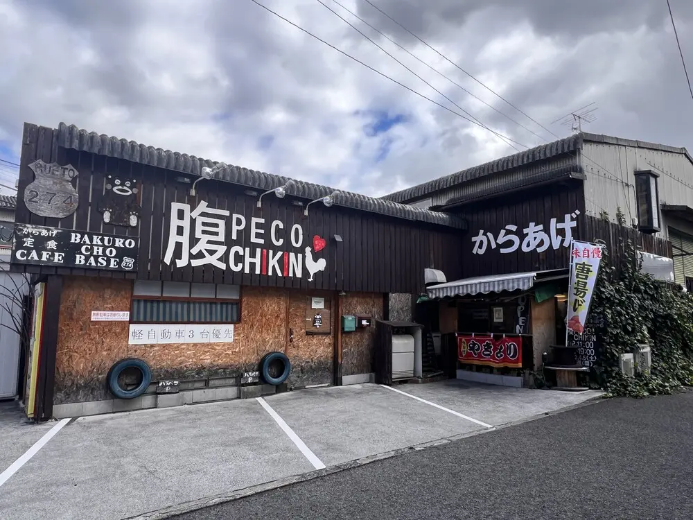
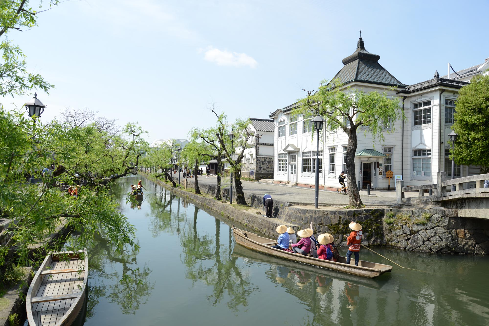
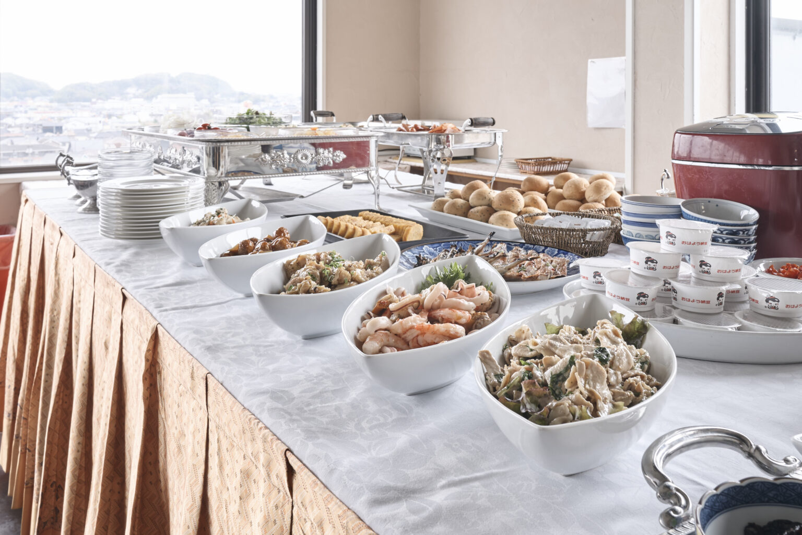
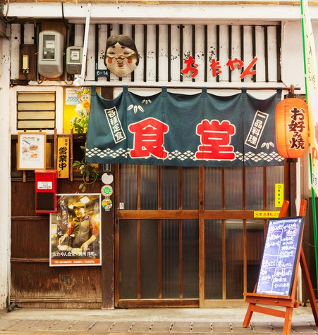
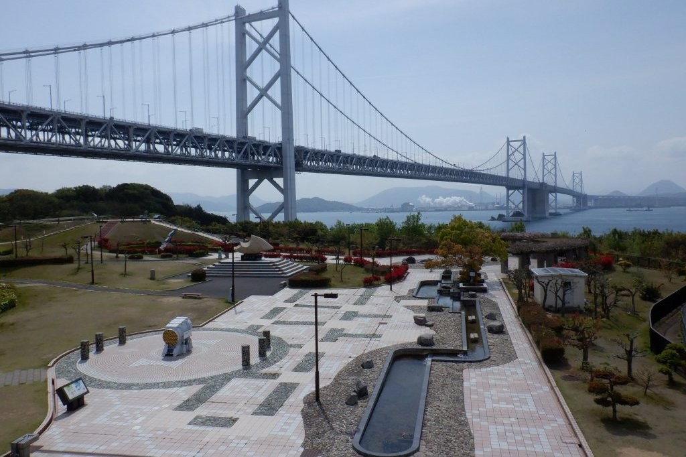
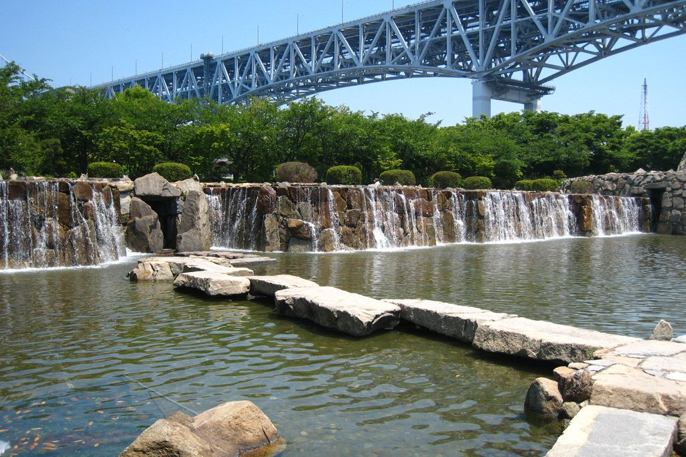
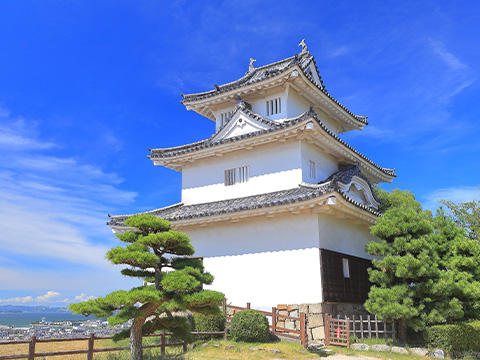

12/28 (日) 倉敷への旅路
08:00
出発
家族全員集合して出発！安全運転で行きましょう。
12:00
倉敷「腹ペコチキン」
倉敷に到着。まずは名物ランチで腹ごしらえ。
13:00
美観地区 散策
白壁の街並みをゆっくり散策。お土産も見に行こう。
16:00
ホテルセントイン倉敷
チェックインして少し休憩。
18:00
おたやん食堂
地元の美味しい料理とお酒で乾杯。
19:30
ホテル帰着
明日に備えてゆっくり休みましょう。
12/29 (月) 瀬戸大橋と讃岐うどん
09:00
ホテル出発
2日目スタート！瀬戸大橋方面へ。
11:00
与島PA
瀬戸大橋の絶景ポイント。記念撮影タイム。
13:00
麺処 綿谷（丸亀）
本場の讃岐うどんを堪能。
14:30
瀬戸大橋記念公園 or 丸亀城
天候や気分に合わせてどちらかへ。
 16:00
ことひら温泉 琴参閣
早めのチェックインで温泉三昧。

12/30 (火) 金比羅山参拝
Morning
朝食・チェックアウト準備
朝ごはんをしっかり食べてエネルギーチャージ。
10:00
琴参閣 出発
荷物をまとめて、いざこんぴらさんへ。
10:15
金刀比羅宮（参拝）
階段を登って本宮へ。景色も最高です。

12:00
参道周辺で昼食
参拝の後は美味しいご当地グルメを。

13:00
現地出発
楽しかった旅も終わり。安全運転で帰路へ。
17:00
帰宅
お疲れ様でした！